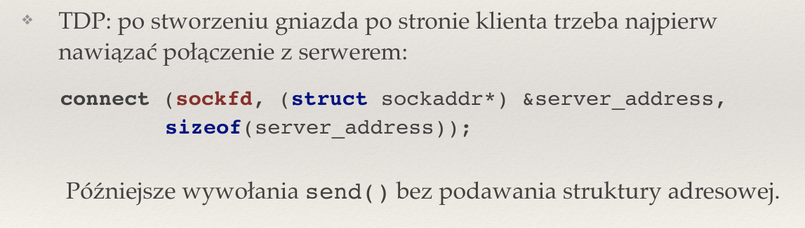
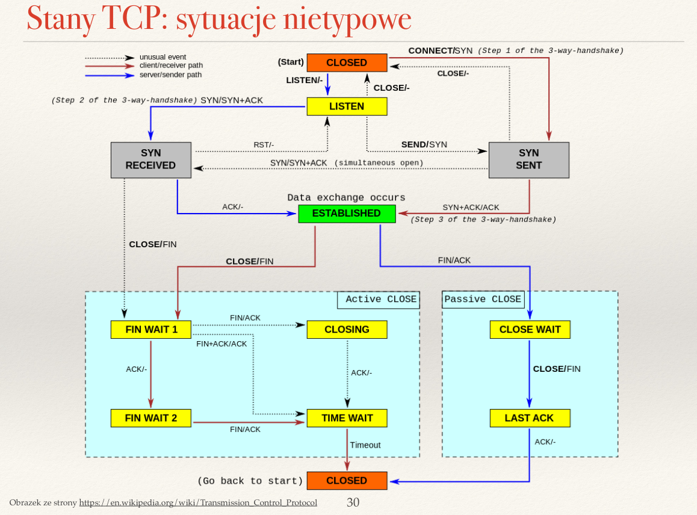
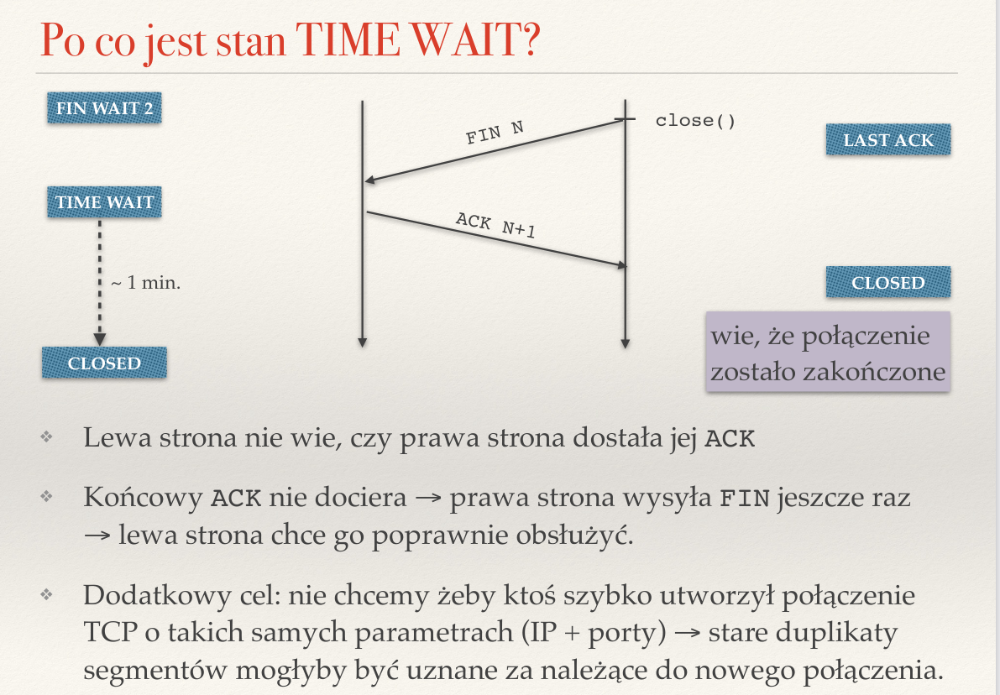
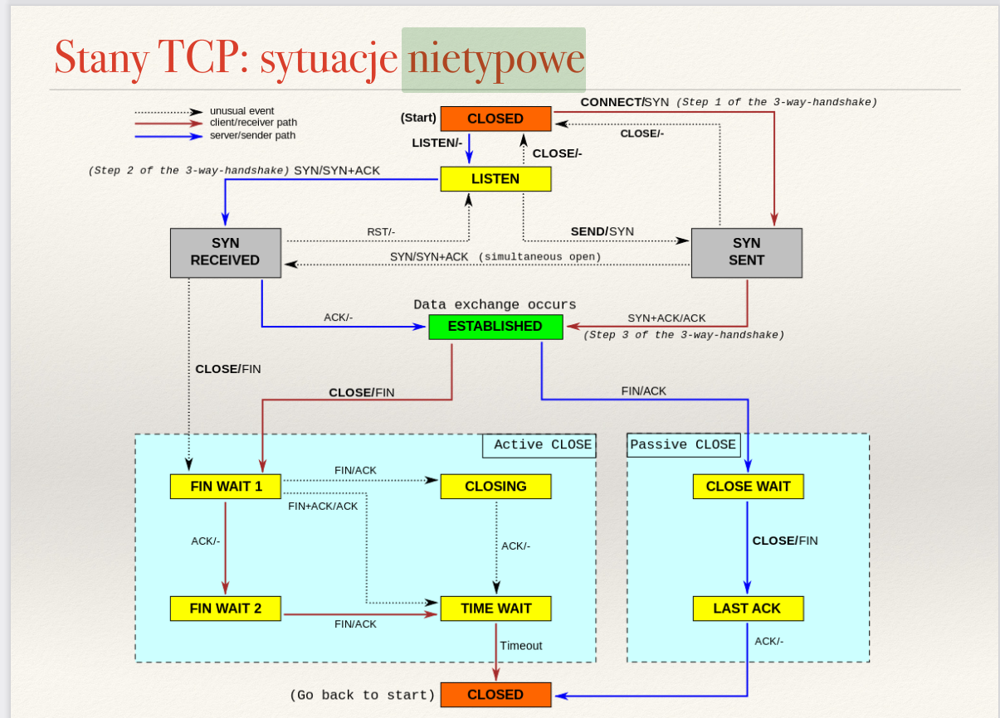

Created Thursday 23 June 2022
Zagadnienia
❖ Co to jest gniazdo?
Gniazdo (socket) pozwalają na komunikację między dwoma procesami na tej samej lub dwóch różnych maszynach. Są interfejsem, przypominającym deskryptory plików i pozwalające na podobną do nich komunikację (zapisy i odczyty).
❖ Czym różni się gniazdo nasłuchujące od gniazda połączonego? Czy w protokole UDP mamy gniazda
połączone?
Gniazdo nasłuchujące to gniazdo serwera, które służy tylko do nawiązywania połączeń — wykorzystuje się je go listen(). Posiada tylko jedną stronę (serwera) i jeden adres.
Gniazdo połączone to gniazdo, służące do komunikacji między serwerem a klientem. Obie strony mają przypisane adresy.
W protokole UDP nie mamy gniazd połączonych — jest to protokół bezpołączeniowy.
❖ Co robią funkcję jądra bind(), listen(), accept(), connect()?
bind() — przypisuje adres sieciowy do gniazda.
listen() — ustawia gniazdo w tryb nasłuchiwania.
accept() — akceptuje połączenie na gnieździe, wyciąga pierwsze zapytanie z kolejki gniazda nasłuchującego, tworzy nowe gniazdo połączone i zwraca deskryptor, który jest do niego przypisany.
connect() — łączy gniazdo z podanym adresem. Uzywane przez klienta do nawiązania połączenia z serwerem.

❖ Czym różni się komunikacja bezpołączeniowa od połączeniowej?
Bezpołączeniowa
- strony nie utrzymują stanu
- za każdym razem przesył danych wygląda tak samo
Połączeniowa
- strony utrzymują stan
- na początku wysyłają komunikaty nawiązujące połączenie
- późniejsza komunikacja jest wygodniejsza niż przy bezpołączeniowym
- na końcu trzeba zakończyć połączenie
❖ Czym różni się otwarcie bierne od otwarcia aktywnego? Czy serwer może wykonać otwarcie aktywne?
Otwarcie czynne to rozpoczęcie połączenia od wysłania pakietu (przejście do stanu SYN_SENT). Otwarcie bierne to otwarcie połączenia bez wysłania pakietu (przejście do LISTEN).
Serwer nie może wykonać otwarcia aktywnego, ponieważ otwarcie bierne, to coś, co definiuje serwer.
❖ Do czego służą flagi SYN, ACK, FIN i RST stosowane w protokole TCP?
SYN —synchronizacja (do nawiązywania połącenia)
ACK —sprawia, że pole "numer potwierdzanego bajtu" ma znaczenie. Potwierdza odebranie pakietu.
FIN —finish (do kończenia połączenia). Nadawca ne będzie juz nic mówił.
RST — wysyłana, kiedy wystąpi błąd, np. w odpowiedzi na dowolny segment wysłany do zamkniętego portu. Po otrzymaniu takiego segmentu z gniazda nie da się już korzystać.
❖ Opisz trójstopniowe nawiązywanie połączenia w TCP. Jakie informacje są przesyłane w trakcie takiego
połączenia?
- Klient robi connect/SYN, mówiąc, że chce się połączyć.
- Serwer nasłuchuje i odpowiada SYN/SYN+ACK, potwierdzając.
- Klient odpowiada SYN+ACK/ACK i oba wchodzą w stan połączony.

❖ Dlaczego przesyłanych bajtów nie numeruje się od zera?
W celu zapewnienia minimalnego bezpieczeństwa. Zaczyna się numerować pakiety od losowej liczby, by utrudnić podszywanie się.
❖ Jakie segmenty są wymieniane podczas zamykania połączenia w protokole TCP?
FIN, ACK. Zależy od tego, kto zamyka.
❖ Co zwraca funkcja recv() wywołana na gnieździe w blokującym i nieblokującym trybie?
Blokujący — jeśli jest coś do odczytania, to odczytuje i zwraca liczbę odczytanych bajtów. Jeśli nie, to czeka dalej.
Nieblokujący --jeśli jest coś do odczytania to liczbę bajtów, jeśli nie, to zwraca -1 i ustawia errno na EAGAIN lub EWOULDBLOCK.
❖ Po co wprowadzono stan TIME_WAIT?

Z kilku powodów:
- Numerki gniazd nie są zbyt duże, więc ich licznik może się przekręcić. Wprowadzamy ten stan, by nie połączyć się z niedawno używanym gniazdem, ponieważ wtedy stare duplikaty segmentów mogłyby zostać odebrane przez nowe połączenie.
- Druga strona nie wie, czy komunikacja faktycznie została zamknięta na stałe. Odczekuje pewien czas, żeby się upewnić.
- Jeśli ostatni ACK nie dociera, wtedy druga strona jeszcze raz wysyła FIN. Lewa strona chce móc go poprawnie obsłużyć, więc nie może od razu przejść do stanu CLOSED.
❖ Na podstawie diagramu stanów TCP opisz możliwe scenariusze nawiązywania i kończenia połączenia.
Tu są chyba wszystkie :(

/pasted_image.png){kind=link}
/pasted_image001.png){kind=link}
/pasted_image002.png){kind=link}
/pasted_image003.png){kind=link}
/pasted_image004.png){kind=link}
/pasted_image005.png){kind=link}
/pasted_image006.png){kind=link}
/pasted_image007.png){kind=link}
/pasted_image008.png){kind=link}